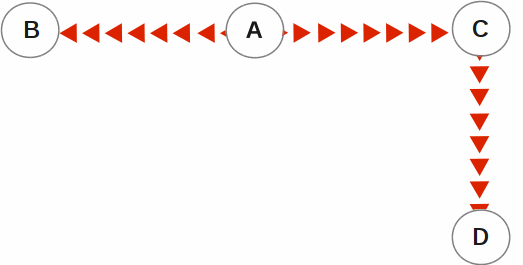
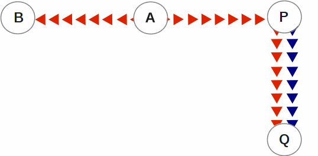
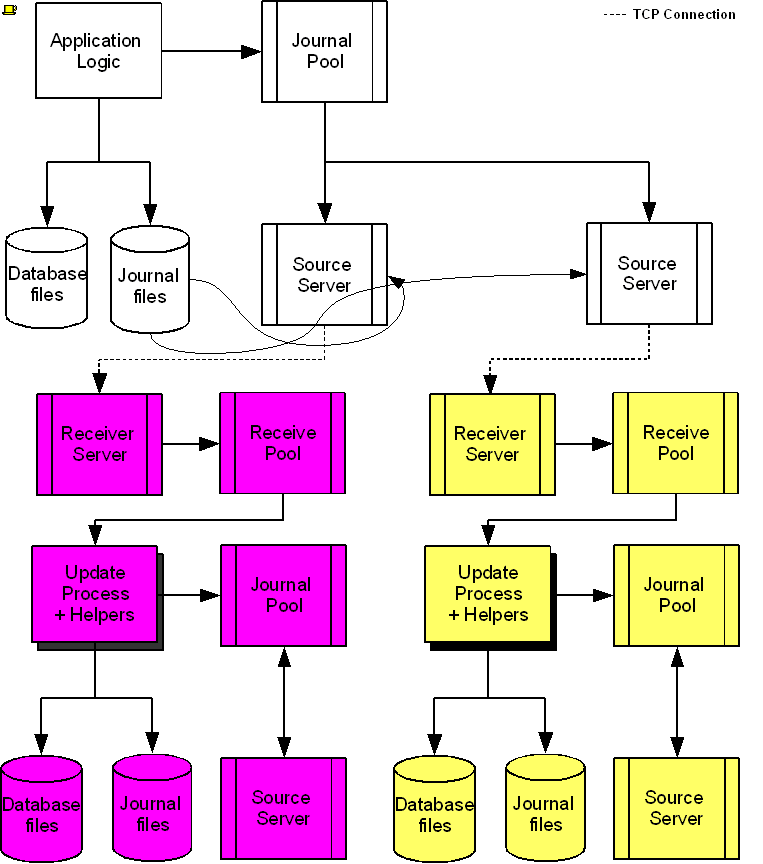

GT.M replication provides logical equivalence between multiple databases. It facilitates continuous application availability, real-time decision support, warehousing, analytics, and auditing. There are two types of replication:
Business Continuity (BC) replication
Supplementary Instance (SI) replication
BC replication helps provide business continuity for GT.M databases. Updates applied at an originating instance replicate in near real-time to a replicating instance. To help ensure this consistency, BC replication prohibits locally generated database updates on a replicating secondary instance. For example with instances named A and B, business logic processed on instance A can be streamed to instance B so that should A ever go down, B can immediately take over and provide continuity. In order to ensure that B produces results consistent with A, B can contain only material state information that is also in A.
Updates applied at an originating instance replicate in near real-time to as many as sixteen replicating instances each of which can propagate further down to as many as sixteen replicating instances. Each replicating instance can further replicate to as any as sixteen replicating instances and so on. When an originating instance becomes unavailable, any downstream instance can become the replacement originating instance to keep the application available.
In the following illustration, A is the originating primary instance and B and C are its replicating instances. C is also a propagating primary instance because it further replicates to D. This BC replication configuration can also be described as a Ba??Aa??Ca??D configuration.
BC replication is intended for mission-critical applications that must be available 24 hours a day, 365 days a year, in the face of both unplanned events (such as system crashes) as well planned events (such as system and software upgrades).
With BC replication, you can create a logical multi-site (LMS) replication configuration for mission critical applications that must always be available not only in face of unplanned events (such as system or data center failures) but also in the face of planned events such as computing platform upgrades, OS upgrades, GT.M upgrades and even application upgrades. Deploying a BC replication configuration should take into account available network capacities, operational preferences, risk assessments, and business continuity requirements.
With SI replication, an instance has the ability to receive replication stream from another instance and at the same time execute its own business logic to compute and commit its own updates. In the following Ba??Aa??Pa??Q replication configuration, instance P can execute its own business logic to compute and commit its updates to its own replicated regions while receiving a replication stream from A. A is an originating primary instance, P is a supplementary originating instance, B is a secondary (standby) instance for A and Q is a secondary (standby) supplementary instance for P. In this configuration, B and Q are only permitted to receive and apply replication streams from their respective originating instances. Unlike P, B and Q cannot generate their own updates.
SI replication is a general purpose mechanism whose utility includes applications such as real-time decision support, warehousing, analytics, and auditing.
![[Note]](../common/images/note.jpg) | Note |
|---|---|
In this book, instances {A, B, C...} denote instances setup for use as business continuity instances and instances {P, Q, R...} are set up for use as supplementary instances. An instance is a supplementary instance if its replication instance file is created with the -supplementary qualifier. |
GT.M imposes no distance limits between instances. You can place instances 20,000 kilometers apart (the circumference of Planet Earth is 40,000 kilometers) or locally within the same data center.
Using TCP connections, GT.M replicates between instances with heterogeneous stacks of hardware, operating system, endian architecture and even GT.M releases. A GT.M instance can source a BC replication stream to, or receive a BC replication stream from, GT.M V5.1-000 or later. However, SI replication requires both source and receive side must be GT.M V5.5-000 or later. GT.M replication can even be used in configurations with different application software versions, including many cases where the application software versions have different database schema. This also means that a number of inexpensive systems - such as GNU/Linux commodity servers - can be placed in locations throughout an organization. Replicating instances can be used for decision support, reporting, and analytics. Because GT.M databases can be encrypted, these commodity servers are potentially usable in environments outside secure data centers as long as their operating systems and software are secured.
GT.M replication requires journaling to be enabled and turned on for replicated regions. Unreplicated regions (for example, global variables containing information that is meaningful only on one instance and only as long as the instance is operating - such as process ids, temporary working files, and so on) need not be replicated or journaled.
GT.M replication mechanism is designed in such a way that a network failure between instances will not stop an application from being available, which is a limitation of techniques such as high availability clustering[1]. There are mechanisms in place for edge cases like processing "in flight" transactions and common cases like handling backlog of updates after recovery from a network failure. While it is not possible to provide absolute continuity of business in our imperfect universe, an LMS configuration gives you the flexibility to choose application configurations that match your investment to a risk level that best meets the business needs of your organization.
GT.M replication is asynchronous, which in turn means that the source and receiver ends of a replication connection are at an identical state when there is no activity underway. To maintain consistency, and to restore it when restarting a replication connection, instances maintain a common, mutually coherent, instance-wide serial number called a journal sequence number. Each journal sequence number is tagged with two fields that identify the source of the update- a stream # that can take on values 0 through 15 and a stream sequence number (the journal sequence number of the update on the originating instance). Because replication deals with an entire global variable namespace, regardless of the mapping of global variables to database files, all updates participate in this numbering, even when modifying different database files. All updates in a transaction (within the TSTART/TCOMMIT boundary) have the same journal sequence number. Each update outside a transaction boundary has a unique journal sequence number.
On instances that do not include updates from supplementary logic, the journal sequence number and the stream sequence number are the same.
Suppose sequence numbers in P are 100, 101, and 102. If the first and third transactions are locally generated and the second is replicated, the tagged journal sequence numbers might be something like {100,0,10}, {101,1,18}, {102,0,11}. The 0 stream # for 100 and 102 indicates those transactions are generated locally on P whereas stream # 1 indicates those transactions were generated in A. If P needs to roll {101,1,18} off its database in order to resychronize replication with A, database update serialization also requires it to roll {102,0,11} off as well, and both will appear in the Unreplicated Transaction Log (also known as Lost Transaction File).
The journal sequence number on A becomes the stream sequence number on P for transactions replicated from A to P. In the example, the transaction that has the P sequence number of 101 has the sequence number 18 on A and B. The replication instance file in P contains information that allows GT.M to determine this mapping, so that when P rolls {101,1,18} off its database, A knows that P has rolled off its transaction 18, and can include that when catching P up.
If P in turn implements BC replication to another instance Q, the tagging is propagated to Q, such that if A and P both go down (e.g., if they are co-located in a data center that loses electricity), B and C can take over the functions of A and P respectively, and Q can perform any synchronization needed in order to start accepting a replication stream from B as being a continuation of the updates generated by A, and B in turn accepts Q as the successor to P.
An LMS Group is a set of one or more instances that receive updates from the same originating primary instance and represent the same logical state. GT.M implicitly forms an LMS Group by storing the identification of the originating primary instance in the replication instance file of each replicating instance. There are two types of LMS Groups:
BC Group: An LMS Group whose originating primary instance is a BC instance. A BC Group can have BC and SI instances as members.
SI Group: An LMS Group whose originating primary instance is an SI instance. An SI Group can have only SI instances as members and can receive replication only from a BC member of a BC Group.
BC members of a BC Group can replicate downstream to other BC and SI groups whereas an SI Group cannot replicate downstream to other groups.
![[Important]](../common/images/important.jpg) | Important |
|---|---|
Instances can change their roles within an LMS group but they cannot move between groups, however data from one instance / group can be loaded into another group. |
The following example illustrates a replication configuration where instance A from A's BC Group replicates to instance Q in Q's SI Group.
+-----------------+
| + A + |
| | | | |
|Ba??----| | |----a??P|
+--------|--------+
|
|
+--------V--------+
| + Q + |
| | | |
|Ra??----| |----a??S|
+-----------------+ | Note |
|---|---|
In this replication configuration, instance B can also replicate to instance Q. However, instance P cannot replicate to an instance in Q's group because it is an SI member of A's BC group. |
Every transaction applied to a database file increments the database transaction number for that file. Each block records the database transaction number at which it was updated, and the Current transaction field in the file header shows the value for the next transaction or mini-transaction to use. The following database file header fields all show database transaction numbers: Last Record Backup, Last Database Backup, Last Bytestream Backup, Maximum TN, and Maximum TN Warn.
Database transaction numbers are currently unsigned 64-bit integers.
While database activity uses database transaction numbers sequentially, not every transaction number can be found in a database block. For a Kill increments the database transaction number, but can remove blocks with earlier database transaction numbers from the database.
Note that database transaction numbers are updated in memory and only periodically flushed to secondary storage, so in cases of abnormal shutdown, the on-disk copies in the file header might be somewhat out-of-date.
While the database transaction number is specific to a database file, replication imposes a serialization of transactions across all replicated regions. As each transaction is placed in the Journal Pool it is assigned the next journal sequence number. When a database file in a replicated instance is updated, the Region Seqno field in the file header records the journal sequence number for that transaction. The journal sequence number for an instance is the maximum Region Seqno of any database file in that instance. While it uses them in processing, GT.M stores journal sequence numbers only in journal files. In database file headers, Zqgblmod Seqno and Zqgblmod Trans are journal sequence numbers.
Except for transactions in Unreplicated Transaction Logs, the journal sequence number of a transaction uniquely identifies that transaction on the originating primary instance and on all replicating secondary instances. When replicated via SI replication, the journal sequence number becomes a stream sequence number (see below) and propagated downstream, thus maintaining the unique identity of each transaction.
Journal sequence numbers cannot have holes - missing journal sequence numbers are evidence of abnormal database activity, including possible manual manipulation of the transaction history or database state.
Journal sequence numbers are 60-bit unsigned integers.
The receiver of a SI replication stream has both transactions that it receives via replication as well as transactions that it computes locally from business logic. As discussed earlier, while journal sequence numbers can uniquely identify a series of database updates, they cannot identify the source of those updates. Therefore, we have the concept of a stream sequence number.
On an originating primary instance that is not the recipient of an SI replication stream, the journal sequence number and the stream sequence number are the same.
On a primary instance that is the recipient of an SI replication stream, the journal sequence numbers uniquely identify and serialize all updates, whether received from replication or locally generated. However, there is also a stream sequence number, which is the journal sequence number for locally generated transactions, and for replicated updates, the combination of a non-zero 4 bit tag (that is, with values 1 through 15) and the journal sequence number for the transaction on the system from which it was replicated. These stream sequence numbers are propagated to downstream replicating secondary instances.
Stream sequence numbers are 64-bit unsigned integers.
GDE provides a mapping option (GDE CHANGE -INSTANCE -FILE_NAME=<replication_instance_file>) to bind a global directory with a replication instance file. With this mapping option, GT.M processes give precedence to the <replication_instance_file> stored in GDE over any (or no) value of the gtm_repl_instance environment variable. This makes it possible for a GT.M process to update globals in the replicated regions of a different replication instance than that defined by the gtm_repl_instance environment variable.
Without this mapping option (that is, GDE CHANGE -INSTANCE -FILE_NAME= ""), an attempt to update a global bound to an instance other than the default replication instance file specified with the environment variable gtm_repl_instance produces the REPLINSTMISMTCH error:
GTM>set ^|"/path/to/unbound/XXXX.gld"|replnamespace="Hello from same system instance YYYY" %GTM-E-REPLINSTMISMTCH, Process has replication instance file YYYY.repl (jnlpool shmid = 9999) open but database XXXX.dat is bound to instance file XXXX.repl (jnlpool shmid = 8888)
The following restrictions apply for making updates to the replicated regions of an instance bound global directory:
A replication instance file cannot share any region with another instance file.
The Source Servers of all the instances have properly set up Replication Journal Pools.
A TP transaction or a trigger, as it always executes within a TP transaction, must always restrict updates to globals in one replicating instance.
| Note |
|---|---|
|
| Important |
|---|---|
We believe that this functionality may interest both application developers and database administrators. Because this functionality has a wide variety of creative use cases when combined with other GT.M features like Triggers, TP, serialization with LOCK controls, replication filters, etc., we encourage GT.M users to explore this feature and provide us with feedback. |
To make the following scenarios easier to understand, each update is prefixed with the system where it was originally generated and the sequence number on that system and any BC replicating secondary instances.
The three systems initially operate in roles O (Originating primary instance), R (BC Replicating secondary instance) and S (recipient of an SI replication stream).
|
Ardmore |
BrynMawr |
Malvern |
Comments |
|---|---|---|---|
|
O: ... A95, A96, A97, A98, A99 |
R: ... A95, A96, A97, A98 |
S: ... M34, A95, M35, M36, A96, A97, M37, M38 |
Ardmore as an originating primary instance at transaction number A99, replicates to BrynMawr as a BC replicating secondary instance at transaction number A98 and Malvern as a SI that includes transaction number A97, interspersed with locally generated updates. Updates are recorded in each instance's journal files using before-image journaling. |
|
Crashes |
O: ... A95, A96, A97, A98, B61 |
... M34, A95, M35, M36, A96, A97, M37, M38 |
When an event disables Ardmore, BrynMawr becomes the new originating primary, with A98 as the latest transaction in its database, and starts processing application logic to maintain business continuity. In this case where Malvern is not ahead of BrynMawr, the Receiver Server at Malvern can remain up after Ardmore crashes. When BrynMawr connects, its Source Server and Malvern's Receiver Server confirms that BrynMawr is not behind Malvern with respect to updates received from Ardmore, and SI replication from BrynMawr picks up where replication from Ardmore left off. |
|
- |
O: ... A95, A96, A97, A98, B61, B62 |
S: ... M34, A95, M35, M36, A96, A97, M37, M38, A98, M39, B61, M40 |
Malvern operating as a supplementary instance to BrynMawr replicates transactions processed on BrynMawr, and also applies its own locally generated updates. Although A98 was originally generated on Ardmore, Malvern received it from BrynMawr because A97 was the common point between BrynMawr and Malvern. |
|
... A95, A96, A97, A98, A99 |
O: ... A95, A96, A97, A98, B61, B62, B63, B64 |
S: ... M34, A95, M35, M36, A96, A97, M37, M38, A98, M39, B61, M40, B62, B63 |
Malvern, continuing as a supplementary instance to BrynMawr, replicates transactions processed on BrynMawr, and also applies its own locally generated updates. Ardmore meanwhile has been repaired and brought online. It has to roll transaction A99 off its database into an Unreplicated Transaction Log before it can start operating as a replicating secondary instance to BrynMawr. |
|
R: ... A95, A96, A97, A98, B61, B62, B63, B64 |
O: ... A95, A96, A97, A98, B61, B62, B63, B64, B65 |
S: ... M34, A95, M35, M36, A96, A97, M37, M38, A98, M39, B61, M40, B62, B63, M41, B64 |
Having rolled off transactions into an Unreplicated Transaction Log, Ardmore can now operate as a replicating secondary instance to BrynMawr. This is normal BC Logical Multi-Site operation. BrynMawr and Malvern continue operating as originating primary instance and supplementary instance. |
Whereas in the last example Malvern was not ahead when starting SI replication from BrynMawr, in this example, asynchronous processing has left it ahead and must rollback its database state before it can receive the replication stream.
|
Ardmore |
BrynMawr |
Malvern |
Comments |
|---|---|---|---|
|
O: ... A95, A96, A97, A98, A99 |
R: ... A95, A96, A97 |
S: ... M34, A95, M35, M36, A96, A97, M37, M38, A98, M39, M40 |
Ardmore as an originating primary instance at transaction number A99, replicates to BrynMawr as a BC replicating secondary instance at transaction number A97 and Malvern as a SI that includes transaction number A98, interspersed with locally generated updates. Updates are recorded in each instance's journal files using before-image journaling. |
|
Crashes |
O: ... A95, A96, A97 |
... M34, A95, M35, M36, A96, A97, M37, M38, A98, M39, M40 |
When an event disables Ardmore, BrynMawr becomes the new originating primary, with A97 the latest transaction in its database. Malvern cannot immediately start replicating from BrynMawr because the database states would not be consistent - while BrynMawr does not have A98 in its database and its next update may implicitly or explicitly depend on that absence, Malvern does, and may have relied on A98 to compute M39 and M40. |
|
- |
O: ... A95, A96, A97, B61, B62 |
S: ... M34, A95, M35, M36, A96, A97, M37, M38, B61 |
For Malvern to accept replication from BrynMawr, it must roll off transactions generated by Ardmore, (in this case A98) that BrynMawr does not have in its database, as well as any additional transactions generated and applied locally since transaction number A98 from Ardmore.[a] This rollback is accomplished with a MUPIP JOURNAL -ROLLBACK -FETCHRESYNC operation on Malvern.[b] These rolled off transactions (A98, M39, M40) go into the Unreplicated Transaction Log and can be subsequently reprocessed by application code.[c] Once the rollback is completed, Malvern can start accepting replication from BrynMawr.[d] BrynMawr in its Originating Primary role processes transactions and provides business continuity, resulting in transactions B61 and B62. |
|
- |
O: ... A95, A96, A97, B61, B62, B63, B64 |
S: ... M34, A95, M35, M36, A96, A97, M37, M38, B61, B62, M39a, M40a, B63 |
Malvern operating as a supplementary instance to BrynMawr replicates transactions processed on BrynMawr, and also applies its own locally generated updates. Note that M39a & M40a may or may not be the same updates as the M39 & M40 previously rolled off the database. |
[a] As this rollback is more complex, may involve more data than the regular LMS rollback, and may involve reading journal records sequentially; it may take longer. [b] In scripting for automating operations, there is no need to explicitly test whether BrynMawr is behind Malvern - if it is behind, the Source Server will fail to connect and report an error, which automated shell scripting can detect and effect a rollback on Malvern followed by a reconnection attempt by BrynMawr. On the other hand, there is no harm in Malvern routinely performing a rollback before having BrynMawr connect - if it is not ahead, the rollback will be a no-op. This characteristic of replication is unchanged from releases prior to V5.5-000. [c] GT.M's responsibility for them ends once it places them in the Unreplicated Transaction Log. [d] Ultimately, business logic must determine whether the rolled off transactions can simply be reapplied or whether other reprocessing is required. GT.M's $ZQGBLMOD() function can assist application code in determining whether conflicting updates may have occurred. | |||
In the example above, for Malvern to start accepting SI replication from BrynMawr with consistency requires it to rollback its database because it is ahead of BrynMawr. There may be applications where the design of the application is such that this rollback neither required nor desired. GT.M provides a way for SI replication to start in this situation without rolling transactions off into an Unreplicated Transaction File.
|
Ardmore |
BrynMawr |
Malvern |
Comments |
|---|---|---|---|
|
O: ... A95, A96, A97, A98, A99 |
R: ... A95, A96, A97 |
S: ... M34, A95, M35, M36, A96, A97, M37, M38, A98, M39, M40 |
Ardmore as an originating primary instance at transaction number A99, replicates to BrynMawr as a BC replicating secondary instance at transaction number A97 and Malvern as a SI that includes transaction number A98, interspersed with locally generated updates. Updates are recorded in each instance's journal files using before-image journaling. |
|
Crashes |
O: ... A95, A96, A97, B61, B62 |
... M34, A95, M35, M36, A96, A97, M37, M38, A98, M39, M40 |
When an event disables Ardmore, BrynMawr becomes the new originating primary, with A97 the latest transaction in its database and starts processing application logic. Unlike the previous example, in this case, application design permits (or requires) Malvern to start replicating from BrynMawr even though BrynMawr does not have A98 in its database and Malvern may have relied on A98 to compute M39 and M40. |
|
- |
O: ... A95, A96, A97, B61, B62 |
S: ... M34, A95, M35, M36, A96, A97, M37, M38, A98, M39, M40, B61, B62 |
With its Receiver Server started with the -noresync option, Malvern can receive a SI replication stream from BrynMawr, and replication starts from the last common transaction shared by BrynMawr and Malvern. Notice that on BrynMawr no A98 precedes B61, whereas it does on Malvern, i.e., Malvern was ahead of BrynMawr with respect to the updates generated by Ardmore. |
Now consider a situation where Ardmore and Malvern are located in one data center, with BC replication to BrynMawr and Newtown respectively, located in another data center. When the first data center fails, the SI replication from Ardmore to Malvern is replaced by SI replication from BrynMawr to Newtown.
|
Ardmore |
BrynMawr |
Malvern |
Newtown |
Comments |
|---|---|---|---|---|
|
O: ... A95, A96, A97, A98, A99 |
R: ... A95, A96, A97, A98 |
S: ... M34, A95, M35, M36, A96, M37, A97, M38 |
R: ... M34, A95, M35, M36, A96, M37 |
Ardmore as an originating primary instance at transaction number A99, replicates to BrynMawr as a BC replicating secondary instance at transaction number A98 and Malvern as a SI that includes transaction number A97, interspersed with locally generated updates. Malvern in turn replicates to Newtown. |
|
Goes down with the data center |
O: ... A95, A96, A97, A98, B61, B62 |
Goes down with the data center |
... M34, A95, M35, M36, A96, M37 |
When a data center outage disables Ardmore, and Malvern, BrynMawr becomes the new originating primary, with A98 as the latest transaction in its database and starts processing application logic to maintain business continuity. Newtown can receive the SI replication stream from BrynMawr, without requiring a rollback since the receiver is not ahead of the source. |
|
- |
O: ... A95, A96, A97, A98, B61, B62 |
- |
S: ... M34, A95, M35, M36, A96, M37, A97, A98, N73, B61, N74, B62 |
Newtown receives SI replication from BrynMawr and also applies its own locally generated updates. Although A97 and A98 were originally generated on Ardmore, Newtown receives them from BrynMawr. Newtown also computes and applies locally generated updates |
|
... A95, A96, A97, A98, A99 |
O: ... A95, A96, A97, B61, B62, B63, B64 |
... M34, A95, M35, M36, A96, M37, A97, M38 |
S: ... M34, A95, M35, M36, A96, M37, A97, A98, N73, B61, N74, B62, N75, B63, N76, B64 |
While BrynMawr and Newtown, keep the enterprise in operation, the first data center is recovered. Since Ardmore has transactions in its database that were not replicated to BrynMawr when the latter started operating as the originating primary instance, and since Malvern had transactions that were not replicated to Newtown when the latter took over, Ardmore and Malvern must now rollback their databases and create Unreplicated Transaction Files before receiving BC replication streams from BrynMawr and Newtown respectively. Ardmore rolls off A98 and A99, Malvern rolls off A97 and M38. |
|
R: ... A95, A96, A97, B61, B62, B63, B64 |
O: ... A95, A96, A97, B61, B62, B63, B64, B65 |
R: ... M34, A95, M35, M36, A96, M37, A97, A98, N73, B61, N74, B62, N75, B63, N76, B64 |
S: ... M34, A95, M35, M36, A96, M37, A97, A98, N73, B61, N74, B62, N75, B63, N76, B64, N77 |
Having rolled off transactions into an Unreplicated Transaction Log, Ardmore can now operate as a replicating secondary instance to BrynMawr. This is normal BC Logical Multi-Site operation. BrynMawr and Malvern continue operating as originating primary instance and supplementary instance. Note that having rolled A97 off its database, Malvern receives that transaction from Newtown as it catches up. |
Consider the following example where Ardmore rolls back its database in state space while an application is in operation. using the MUPIP JOURNAL -ROLLBACK -BACKWARD -ONLINE feature.
|
Ardmore |
BrynMawr |
Malvern |
Comments |
|---|---|---|---|
|
O: ... A95, A96, A97, A98, A99 |
R: ... A95, A96, A97 |
S: ... M34, A95, M35, M36, A96, A97, M37, M38, A98, M39, M40 |
Ardmore as an originating primary instance at transaction number A99, replicates to BrynMawr as a BC replicating secondary instance at transaction number A97 and Malvern as a SI that includes transaction number A98, interspersed with locally generated updates. Updates are recorded in each instance's journal files using before-image journaling. |
|
Rolls back to A96 with A97 through A99 in the Unreplicated Transaction Log |
Rolls back automatically to A96 (assume Receiver Server started with -autorollback - refer to the V5.5-000 Release Notes for details. |
- |
Instances receiving a replication stream from Ardmore can be configured to rollback automatically when Ardmore performs an online rollback by starting the Receiver Server with -autorollback. If Malvern's Receiver Server is so configured, it will roll A97 through M40 into an Unreplicated Transaction Log. This scenario is straightforward. But with the -noresync qualifier, the Receiver Server can be started configured to simply resume replication without rolling back, and that scenario is developed here. |
|
O: ... A95, A96, A97a, A98a, A99a |
R: ... A95, A96, A97a, A98a |
S: ... M34, A95, M35, M36, A96, A97, M37, M38, A98, M39, M40, A97a, M41, A98a, M42 |
Transactions A97a through A99a are different transactions from A97 through A99 (which are in an Unreplicated Transaction File on Ardmore and must be reprocessed). Note that Malvern has both the original A97 and A98 as well as A97a and A98a. A99 was never replicated to Malvern - Ardmore rolled back before it was replicated, and A99a has not yet made it to Malvern (it will soon, unless Ardmore rolls back again). |
starting V5.5-000, GT.M does not support replication between platforms with GT.M releases prior to V5.1-000. To upgrade to GT.M V5.5-000, first upgrade to GT.M V5.1-000 or later as an intermediate step.
Although a receiver of SI replication can source a BC replication stream for downstream propagation, it cannot source an SI replication stream. So, in the example above, while Malvern can receive SI replication from Ardmore or BrynMawr, and it can source a BC replication stream to Newtown, which can in turn source a BC replication stream to Oxford. Thus, none of Malvern, Newtown or Oxford can source an SI replication stream.
Also an instance can only receive a single SI replication stream. Malvern cannot receive SI replication from an instance other than Ardmore (or an instance receiving BC replication from Ardmore, such as BrynMawr). Newtown or Oxford are replicating secondary instances and can receive no updates other than from Malvern.
The total number of replication streams that an instance can source is sixteen, with any combination of BC and SI replication.
The following diagram illustrates a BC replication configuration deployed as Ba??Aa??C. White (top) is the originating instance processing business logic, while Rose (left) and Yellow (right) are replicating instances. The dotted line represents a TCP connection and the red dots show the movement of transactions. If White goes down in an unplanned or planned event, either Rose or Yellow can become the originating instance within seconds to tens of seconds, and the other instance can become a replicating instance to the new originating instance. When White recovers, it rejoins as a replicating instance to the new originating instance. At some suitable future time, when so desired, White can again be made the originating instance.

When a process commits a transaction on White, GT.M provides Durability by writing and "hardening" an update record to the journal file and then the database file. The same process also writes the update records to an area of shared memory called a Replication Journal Pool as part of committing the transaction, but does not wait for Rose and Yellow to commit the transaction (this means that a failure of the network between instances does not stop application operation on White). Two Source Server processes, one for Rose and one for Yellow, read journal update records from the Replication Journal Pool and stream updates over TCP connections to Receiver Server processes on the replicating instances they serve.
Under normal conditions, White Source Servers stream update records from the Replication Journal Pool to the Rose and Yellow Receiver Servers. The Replication Journal Pool is a shared memory segment that does not expand after its initial creation. If updates for the database state to which the replicating instance needs to catch up are no longer in the Replication Journal Pool, the Source Server finds the updates in journal files, until the replicating instance catches up to the point where the remaining required updates can again come from the Replication Journal Pool. The diagram represents this with the curved lines from the journal file to the Source Server processes.
A Source Server can be in either of two modes--active mode or passive mode.
In active mode, a Source Server connects to the Receiver Server on its replicating instance and transfers update records from the Replication Journal Pool via the communication channel. If an active Source Server is not connected to its Receiver Server, it makes repeated attempts to connect until it succeeds. When an active Source Server connects with its Receiver Server, they ensure their two instances are in sync before proceeding with replication. In the diagram, the White Source Servers are in active mode. When an active Source Server receives a command to switch to passive mode, it closes the connection with its Receiver Server and "goes to sleep" until it receives a command to become active.
In passive mode, a Source Server is in a stand-by state.
On a primary instance, the first active Source Server creates the Replication Journal Pool before beginning to transmit updates to the secondary instance. Transition an active Source Server of a primary to passive when you want to pause replicating updates to the secondary instance but continue performing updates on the primary. When you are ready to resume replicating updates from the primary, transition the passive Source Server to active.
Replication requires each instance to have its own Replication Journal Pool. Additionally, an instance that receives a replication stream must have its own Receiver Pool.
On a secondary instance, the Receiver Server creates the Receiver Pool and a passive Source Server (pointing to either a replicating instance downstream or a dummy (non-existing) replicating instance when there is no replicating instance downstream) creates the Replication Journal Pool. White, Rose, and Yellow can be appropriate names of replication instances in the diagram. The passive Source Servers of Rose and Yellow instances both point to a dummy instance as there are no replicating instances downstream.
On Rose and Yellow instances, a Receiver Server receives update records sent by the White Source Server and puts them in the Receiver Pool, which is in a shared memory segment. Source and Receiver Server processes implement flow control to ensure that the Receiver Pool does not overflow. The Update Process picks these update records and writes them to the journal file, the database file, and the Replication Journal Pool. The Update Process on a replicating instance performs operations analogous to "Application Logic" on the originating instance.
Under typical operating conditions, with no system or network bottlenecks, GT.M moves a transaction off the originating instance and into the care of the network moving towards its replicating instance in sub-millisecond time frames. Network transit times then determine how long the transaction message takes to reach the replicating instance. Because it uses a change- or delta-based protocol, GT.M Replication uses network bandwidth efficiently which makes GT.M less resource intensive than physical replication solutions. Furthermore, the Source Server can compress the byte stream which the Receiver Server then decompresses; alternatively network routers can perform the compression and decompression. When starting replication, you can enable TLS replication to secure replication between instances. Alternatively, you can use standard techniques at the stack or router for encrypting TCP connections to secure the replication stream.
Helper processes accelerate the rate at which an Update Process can apply an incoming replication stream to the database on a replicating instance. They increase replication throughput, decrease backlog, and improve manageability.
The GT.M database engine performs best when multiple processes concurrently access the database, cooperating with one another to manage it. Therefore, it is possible for the tens, hundreds or thousands of application processes executing on an originating instance to outperform a replicating instance with only a single Update Process. Helper processes enable the update process to apply database updates faster and thereby keep up.
There are two types of helper processes:
Reader: Reader processes read the update records in the Receive Pool and attempt to pre-fetch database blocks into the global buffer pools, so they are more quickly available for the Update Process.
Writer: Writer processes help the Update Process by flushing database and journal records from shared memory (global and journal buffers) to the file system.
A certain number of each type of helper process maximizes throughput. As a practical matter, as long as the file system bandwidth on a replicating instance is equal to or greater than that of the originating instance providing its replication stream, there need be little concern about having too many helper processes.
| Note |
|---|---|
There may be other reasons for a replicating instance to lag behind its originating instance during replication. Helper processes cannot improve situations such as the following:
|
A Filter is a conversion program that transforms a replication stream to a desired schema. It operates as a traditional UNIX filter, reading from STDIN and writing to STDOUT. Both input and output use the GT.M journal extract format. A filter can operate on an originating instance or a replicating instance. When the originating instance is an older application version, a filter can change the update records from the old schema to the new schema. When the originating instance is the newer application version, a filter can change the update records from the new schema to the old schema. Once you have logic for converting records in the old schema to the new schema, the per record code serves as the basis for the filter by replacing the scanning logic with logic to read the extract format and extract the update and completing the filter by reassembling the revised record(s) into the GT.M extract format.
For complete redundancy during rolling upgrades, you must also have a filter that changes transactions from the new schema to the old schema. The principal restriction in creating schema change filters is that the filter must not change the number of transactions in the replication stream, since GT.M uses the journal sequence numbers for checking and restoring the logical equivalence of instances.
This means:
If a replication stream contains transactions, for each input transaction, the filter must produce one and exactly one output transaction. It's acceptable for a transaction to be empty, that is, to make no database updates.
If an update in a replication stream is outside a transaction, it is considered a transaction in that the journal sequence number is to be incremented by one.
If the schema change requires a single database update, simply emit the new update in the output stream.
If the schema change requires no database updates in the new schema, emit a single empty transaction.
If the schema change requires multiple database updates in the new schema, create a transaction, and package all the updates inside that transaction.
A Replication Instance file maintains the current state of an instance. It also serves as a repository of the history of the journal sequence numbers that are generated locally or received from other instances.
It includes 3 sections -- File Header, Source Server slots, and History Records.
The File Header section records information about the current instance, such as semaphore and shared memory ids of the Journal and Receive Pool, journal sequence number of the current instance.
The Source Server slots store information for each replicating instance for which a Source Server is started. A slot stores the name of the replicating instance, the last transmitted sequence number, and the sequence number when the Source Server was last connected to the originating instance (Connect Sequence Number).
A Replication Instance file has 16 slots. Initially, all are unused. A Source Server replicating to a replicating instance for the first time utilizes an unused slot to store the information and any future Source Server process replicating to the same replicating instance updates this information.
If an unused slot is not available, the first time a Source Server is started to replicate to an instance, the slot for the least recently started replicating instance is reused, and the information that is previously stored in that slot is overwritten. Any subsequent mupip replic -source on the preempted replicating instance generates a REPLINSTSECNONE message.
Preemption of slots does not occur if an instance connects to no more than 16 different replicating instances throughout its lifetime.
In the History Records section, GT.M maintains the history of on instance as a set of records. GT.M adds new history records to the tail of the instance file whenever an instance changes from being an originating instance to replicating instance or vice versa. The only exception being when MUPIP JOURNAL -ROLLBACK removes history records for rolled back updates from the tail of the instance file. Every record identifies a range of journal sequence numbers and the name of the originating instance that generated those journal records. The first history record starts with the current journal sequence number of the instance.
When an originating instance transmits a sequence number to a replicating instance, GT.M records the originating instance name as "Root Primary Instance Name" in the replication instance file history of both the instances. The same rule applies when a replicating instance acts as an originating instance for another replicating instance downstream.
This history serves to determine the journal sequence numbers through which both instances are synchronized when two instances attempt to connect. GT.M determines this journal sequence number by going back in the history of both the instance files to find the most recent shared journal sequence number generated by the Originating Instance. If the shared journal sequence number matches the current journal sequence number of the Replicating Instance, the Receiver Server on the replicating instance continues with normal replication. Otherwise, a synchronization requires a MUPIP JOURNAL -ROLLBACK -FETCHRESYNC, or if configured, an autorollback on the Replicating Instance to rollback to a common synchronization point from which the originating instance can transmit updates to allow the Replicating Instance to catch up.
| Note |
|---|---|
Proper operation requires the Replication Instance file be consistent with the snapshot of the database files in a backup. MUPIP BACKUP -REPLINSTANCE creates a backup of the Replication Instance file. Before backing up the replication instance file, you must start the Source Server for the instance at least once . If the replication instance file is damaged or deleted, you must create a new instance file, and all recreate all downstream Replicating Instances from backups. |
[1] GT.M database replication is compatible with clustering - each instance can be a "hot-warm" cluster where if one node fails, another node can recover the database and continue operation. Since GT.M LMS application configurations provides better business continuity in the face of a greater range of eventualities than clusters, if you wish to use clusters, consider their use in conjunction with, rather than instead of, GT.M LMS configurations.